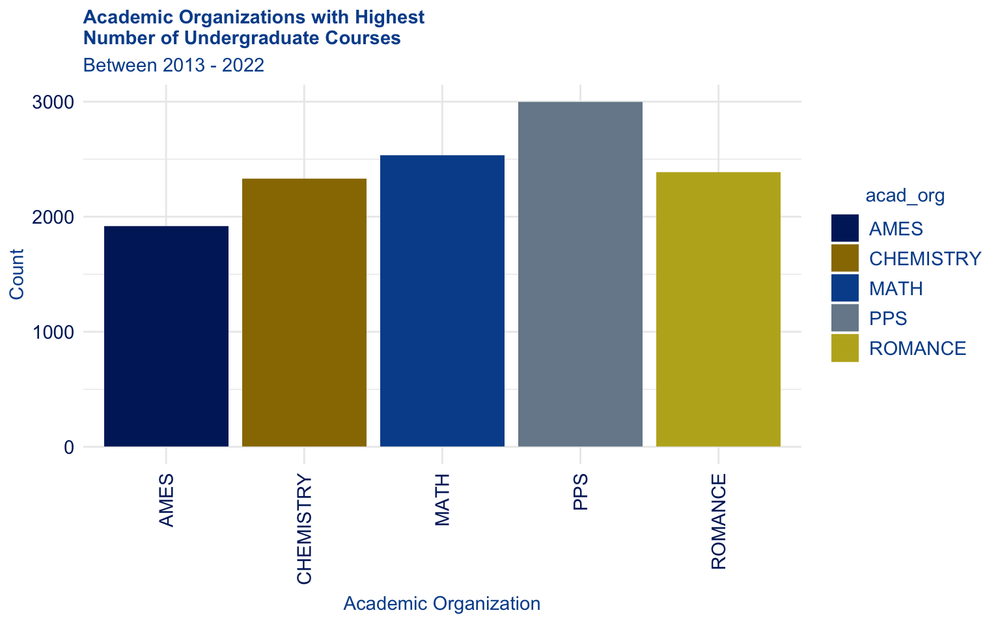

5 Case Study
5.1 Introduction
The duke package is intended to promote color blind accessibility in Duke official visualizations. This applied analysis aims to demonstrate how, when, and why the package may be used within the Duke community.
The data for this analysis is sourced from the Office of the University Registrar and details information about all Duke courses between 2013-2022. The data set has 10 variables and 63,433 observations, each of which is a unique class. Included in the data is information on the course department, subject, enrollment numbers, and room description. See Table 5.1 for a full data dictionary.
| Variable | Description |
|---|---|
acad_year |
Academic year of the course. |
acad_org |
Academic organization abbreviation of the course; proxy for department. |
class_nbr |
Unique class number for the course. |
subject |
Subject abbreviation for course. |
catalog_number |
Course number within academic organizations. |
class_descr |
Course name. |
total_enrollment |
Number of students enrolled in course. |
enrollment_capacity |
Enrollment capacity for course. |
room_capacity |
Capacity for students permitted in course room. |
room_descr |
Room where course is held. |
5.2 Analysis
The Duke Office of the University Registrar facilitates the academic processes of the University by supporting students, faculty and staff in enrollment, academic records, and course scheduling - among many other tasks. It is crucial that the Office continuously explores the academic data they collect to identify the most successful policies for Duke’s educational environment. Their work is critical to the function of the University, making it all the more important that they communicate with the Duke community in an accessible way. Thus, communications, reports, and announcements from the University Registrar offer a tangible use case for the duke package.
The following tabs allows users without color blindness to see duke from their perspective and from the perspective of those who are deuteronamolous. This allows for a better understanding of how the package improves accessibility in Duke data visualizations.
5.2.1 Number of courses by department
The Registrar is interested in understanding the breadth of academic offerings available for students. As we can see in Figure 5.1 and Figure 5.2, the academic organizations (proxy for department) that have offered the largest number of undergraduate courses from 2013-2022 are the Asian and Middle Eastern Studies (AMES), Chemistry, Math, Public Policy (PPS), and Romance Studies departments. With this information, the Registrar can better make decisions about the distribution of University resources and/or understand potential department popularity.

5.2.2 Average class size
Average class size is a staple concern of major universities, as prospective students and their families are attracted to small faculty to student ratios. In Figure 5.3 and Figure 5.4, we find that the Computer Science, Economics, Engineering, Environmental Sciences, and Earth and Ocean Sciences departments have the highest average undergraduate sciences. This is understandable given that they are majorly STEM departments, which tend to have more lecture-based courses. This visualization is a helpful resource for the Registrar to pinpoint departments that would benefit from reducing class size.
5.2.3 Enrollment in Computer Science courses
Now that we have identified Computer Science as a department with larger class capacities, let’s see if there is enough student demand to fill them. Figure 5.5 and Figure 5.6 exhibits both the distribution of student enrollment in Computer Science course and of class capacities in the department. While they share a right skew, the center of student enrollment appears less than that of course capacity. The Registrar would certainly want to investigate the data further, but the visualization suggests that students do not enroll at a high enough rate to fill the courses.
5.2.4 Enrollment in introductory courses
The University often highlights their wide selection of introductory courses that allow new students to explore their interests. ?fig-intro-course-success1 and ?fig-intro-course-success2 explore the intro courses with the most successful enrollment rates. This is beneficial because it informs the Registrar’s process of 1) adding sections to these courses and/or 2) identifying reasons for these courses’ success and integrating them into others.
Conversely, the Registrar may want to identify intro courses with lower enrollment rates so that they can 1) adjust their structure/implementation and/or 2) remove them from the course catalog. Figure 5.9 and Figure 5.10 visualize the eight intro courses with the least successful enrollment rates.
5.2.5 Seminar courses
The University is continuously interested in increasing the amount of face-to-face time students have with their professors. Seminar courses are a great course format for doing so. Figure 5.11 and Figure 5.12 demonstrate the five departments with the highest proportion of seminar courses in their catalog. If the Registrar wants to tout their seminar offerings, they can highlight the Documentary Studies, English, Gender, Sexuality Feminist Studies, Policy and Journalism, and Theater Studies departments.
On the other hand, if the University aims to improve their overall seminar offerings, it is important that they identify departments with lowest proportions. The Registrar may be interested in adding additional seminar courses to the departments in Figure 5.13 and Figure 5.14.
These data insights are critical for both the Registrar and members of the Duke community to make informed educational decisions. To ensure that those who are colorblind have the same level of access, the Registrar should use the duke package as part of their visualization best practices.
5.3 Acknowledgement
A special thanks to Frank Blalark from the Office of the University Registrar for accommodating my request for Duke course data.